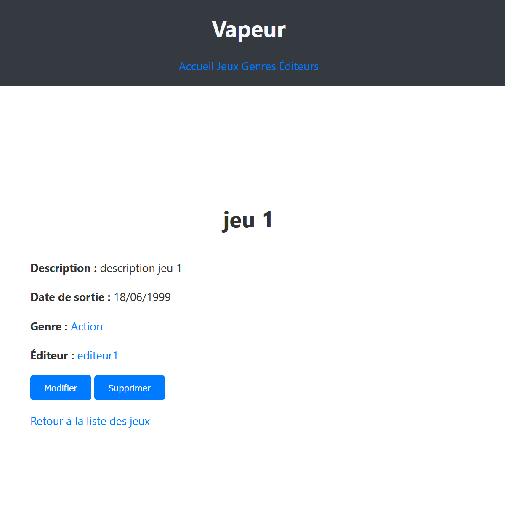

Plateforme de gestion de jeux vidéo - Projet universitaire
Vapeur est un site web développé dans le cadre universitaire, dont le concept est inspiré de la plateforme Steam.
Le site permet de trier, visualiser et créer des jeux vidéo à travers plusieurs catégories.
Fonctionnalités principales :
- 🔖 Une page Accueil listant tous les jeux dans un tableau structuré
- 🎮 Une page Jeux pour créer un nouveau jeu et afficher les informations complètes
- 🎲 Une page Genres avec 6 catégories de jeux : Action, Aventure, Mémoire, RPG, Simulation, Sport. Cliquer sur un genre filtre les jeux correspondants
- 🏢 Une page Éditeur affichant la liste de tous les éditeurs de jeux créés
Le projet a été réalisé en JavaScript (frontend), Express.js (backend), SQLite pour la base de données, et Handlebars pour le rendu dynamique des pages.
J’ai contribué à la conception du site, à l’architecture de la base de données et à l’expérience utilisateur à travers les différentes interfaces dynamiques.